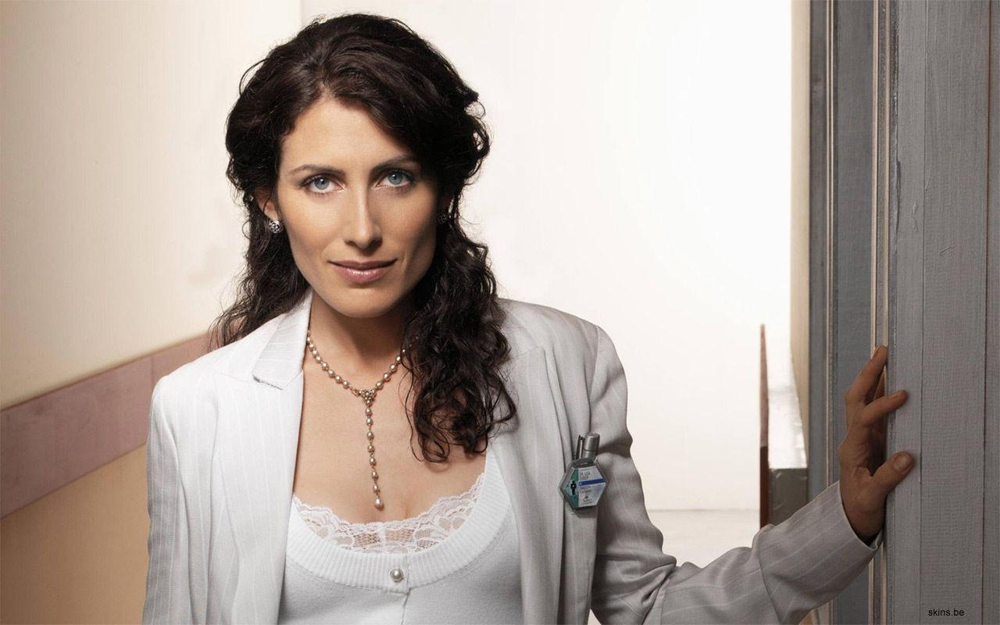
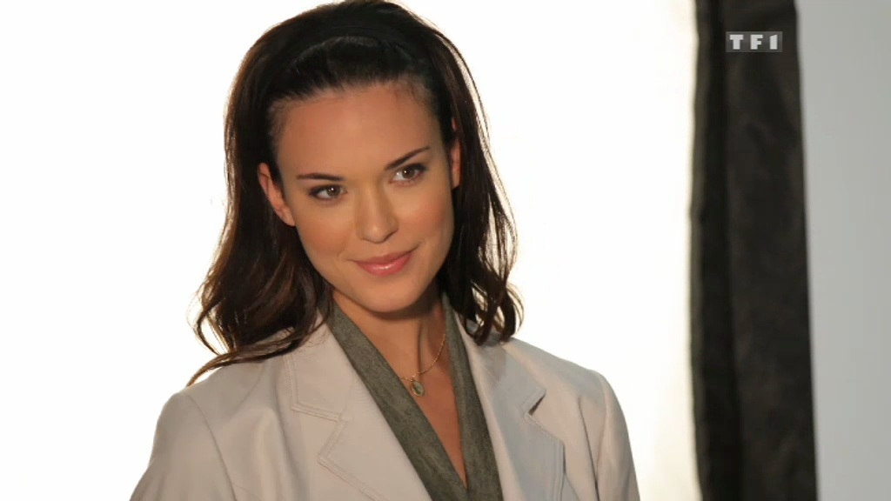
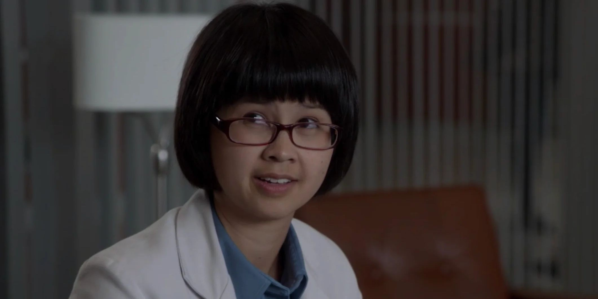

Eric Foreman
Omar Epps
James Wilson, interpretado por Robert Sean Leonard,
es un personaje fundamental cuya presencia define tanto la trama como la dinámica emocional del programa.
Como oncólogo y jefe del Departamento de Oncología en el Hospital Princeton-Plainsboro Teaching, Wilson se distingue por su ética médica impecable
y su dedicación inquebrantable hacia sus pacientes. Su papel va más allá de ser el mejor amigo del brillante pero cínico Dr. Gregory House;
Wilson actúa como su contraparte moral, desafiando sus métodos controvertidos y proporcionando una voz de razón en medio del caos diagnosticador.
A lo largo de las ocho temporadas, la relación entre Wilson y House se desarrolla como una compleja amistad marcada por profundas diferencias de carácter
y una conexión emocional única. Wilson es uno de los pocos capaces de confrontar a House de manera directa y franca, desafiándolo a cuestionar sus motivaciones
y decisiones. Su capacidad para mantener la calma en situaciones de alta presión y su habilidad para equilibrar las demandas de su carrera con sus propios dilemas
personales lo convierten en un personaje entrañable y resonante para los espectadores.
Fuera del hospital, Wilson enfrenta desafíos personales, incluyendo sus relaciones amorosas turbulentas y decisiones éticas difíciles que ponen a prueba su integridad.
A pesar de sus luchas internas, su compasión por los demás y su genuino deseo de ayudar a aquellos que lo rodean lo posicionan como un pilar
de fuerza moral en un entorno médico lleno de ambigüedad moral y decisiones difíciles. James Wilson, con su complejidad emocional y su sentido del deber,
se erige como uno de los personajes más queridos y memorables de la serie televisiva.

Lisa Cuddy, interpretada por Lisa Edelstein, es una figura central cuya presencia influye significativamente en la
vida profesional y personal del Dr. Gregory House. Como decana del Hospital Princeton-Plainsboro Teaching y jefa del Departamento de Medicina,
Cuddy personifica la determinación, la inteligencia y la capacidad de liderazgo en un entorno médico complejo y exigente.
Desde el inicio de la serie, Cuddy desafía constantemente a House con su aguda perspicacia y su habilidad para mantener el orden y la ética en el hospital.
Su relación profesional con House está marcada por un tenso equilibrio entre su admiración por sus habilidades médicas extraordinarias y
su frustración con su comportamiento impredecible y desafiante.
Fuera del ámbito hospitalario, Cuddy también enfrenta desafíos personales,
incluyendo la crianza de su hija adoptiva y la gestión de su vida amorosa. Su capacidad para equilibrar las demandas profesionales con sus responsabilidades
personales la convierte en un ejemplo de fortaleza y determinación para sus colegas y para los espectadores.
A lo largo de las temporadas, la dinámica entre Cuddy y House evoluciona desde la confrontación y la competencia hasta una complicada mezcla de respeto mutuo y una atracción latente.
Lisa Cuddy se destaca como un personaje multifacético cuyo impacto en la serie va más allá de su rol como administradora,
explorando también su humanidad y su lucha por mantenerse fiel a sus principios en un mundo médico lleno de dilemas éticos y emocionales.
Robert Chase, interpretado por Jesse Spencer, es un personaje complejo y multifacético cuya presencia en el equipo de diagnóstico
del Dr. Gregory House aporta una combinación única de habilidades médicas, lealtad y conflictos internos. Como intensivista y cirujano,
Chase destaca por su competencia técnica y su capacidad para enfrentarse a situaciones médicas desafiantes con calma y precisión.
Desde el inicio de la serie, Chase se muestra como un joven médico ambicioso pero también influenciado por su pasado y su relación con su familia.
Su padre, un reconocido médico, y su madre, una pianista alcohólica, dejaron marcas profundas en su personalidad y en su enfoque hacia la medicina y las relaciones personales.
A medida que avanza la serie, Chase evoluciona desde ser un seguidor leal de House hasta convertirse en un médico más independiente y seguro de sí mismo.
Chase enfrenta dilemas éticos significativos a lo largo de las temporadas, incluyendo decisiones médicas controvertidas y
su relación con la Dra. Cameron, que añade complejidad a su desarrollo como personaje. Su capacidad para adaptarse y crecer lo convierte
en uno de los personajes más dinámicos de la serie.
Eric Foreman, interpretado por Omar Epps, es un neurólogo brillante y ambicioso que aporta una perspectiva única al
equipo de diagnóstico del Dr. Gregory House. Desde el principio, Foreman se destaca por su inteligencia aguda y su enfoque metódico para resolver casos médicos complejos.
A lo largo de la serie, Foreman lucha con su identidad profesional y su relación con House. Aunque admira las habilidades diagnósticas de House,
también teme convertirse en una versión de él, especialmente cuando comienza a notar similitudes en su propio comportamiento.
Esta tensión interna define gran parte de su desarrollo como personaje.
Foreman enfrenta desafíos personales significativos, incluyendo un episodio en el que contrae una enfermedad potencialmente mortal,
lo que lo lleva a reflexionar sobre su propia mortalidad y sus prioridades en la vida. Su evolución a lo largo de las temporadas
lo convierte en uno de los personajes más complejos y desarrollados de la serie.

Allison Cameron, interpretada por Jennifer Morrison, es una inmunóloga compasiva y dedicada que trae una perspectiva humana
y empática al a menudo cínico equipo de diagnóstico del Dr. Gregory House. Desde el inicio de la serie, Cameron se distingue por su fuerte sentido
de la ética médica y su genuino cuidado por los pacientes.
A lo largo de las temporadas, Cameron enfrenta desafíos tanto profesionales como personales, incluyendo su compleja relación con House y
posteriormente con Chase. Su pasado, marcado por la pérdida de su esposo debido al cáncer, influye profundamente en su enfoque hacia la medicina
y en su necesidad de salvar a los demás.
Cameron evoluciona de ser una médica idealista a convertirse en alguien más realista sobre las complejidades de la medicina y las relaciones humanas.
Su eventual salida del equipo marca un momento significativo en la serie, reflejando su crecimiento personal y su decisión de seguir su propio camino.

Lawrence Kutner, interpretado por Kal Penn, es un médico innovador y entusiasta que aporta energía y creatividad al equipo de diagnóstico.
Conocido por sus ideas poco convencionales y su disposición para probar tratamientos experimentales, Kutner destaca por su pensamiento fuera de lo común.
A pesar de su exterior alegre y su actitud positiva, Kutner enfrenta demonios internos que permanecen ocultos para sus colegas.
Su trágica muerte por suicidio en la quinta temporada conmociona tanto al equipo como a los espectadores, revelando las profundidades ocultas
de su personaje y generando reflexiones sobre la salud mental.
El impacto de la muerte de Kutner resuena a lo largo de las temporadas siguientes, afectando profundamente a House y al resto del equipo,
y sirviendo como un recordatorio de que incluso aquellos que parecen más felices pueden estar luchando con problemas invisibles.

Remy Hadley, conocida como "Trece" e interpretada por Olivia Wilde, es un personaje enigmático y complejo
cuya presencia en el equipo de diagnóstico añade profundidad emocional y misterio a la serie. Como médica internista, Trece demuestra ser
altamente competente y dedicada a su trabajo.
El personaje de Trece está marcado por su diagnóstico de la enfermedad de Huntington, la misma condición que mató a su madre.
Esta realidad define gran parte de su comportamiento y sus decisiones, incluyendo su enfoque hacia las relaciones y su filosofía de vida.
Su relación con House va más allá de lo profesional, ya que ambos comparten una comprensión mutua del dolor y la mortalidad.
A lo largo de la serie, Trece enfrenta dilemas éticos y personales significativos, incluyendo su participación en la eutanasia de su hermano
y su lucha por encontrar significado en su vida mientras enfrenta una enfermedad terminal. Su desarrollo como personaje explora temas de
autonomía, muerte digna y el valor de vivir plenamente a pesar de las circunstancias.

Chris Taub, interpretado por Peter Jacobson, es un ex cirujano plástico que se une al equipo de diagnóstico de House
trayendo consigo una perspectiva única y un pasado complicado. A pesar de haber tenido una exitosa práctica privada, Taub elige trabajar
en medicina diagnóstica buscando un desafío intelectual mayor.
El personaje de Taub está caracterizado por sus luchas con la infidelidad y su complicada vida matrimonial. A lo largo de la serie,
enfrenta las consecuencias de sus decisiones personales mientras intenta equilibrar su vida profesional con sus responsabilidades familiares.
Su honestidad brutal y su falta de pretensiones lo hacen un miembro valioso del equipo.
Taub evoluciona de ser un médico que huye de sus problemas a convertirse en alguien que los enfrenta directamente.
Su desarrollo incluye convertirse en padre y encontrar un nuevo sentido de propósito tanto en su carrera como en su vida personal.
Martha Masters, interpretada por Amber Tamblyn, es un personaje peculiar y altamente intelectual cuya presencia en el equipo de diagnóstico
del Dr. Gregory House desafía las normas establecidas y añade una nueva dinámica al ambiente ya tenso del hospital Princeton-Plainsboro Teaching.
Como estudiante prodigio de medicina, Masters es conocida por su brillantez académica y su enfoque meticuloso en la búsqueda de respuestas médicas.
Desde su introducción en la serie, Martha Masters destaca por su ética moral inflexible y su tendencia a cuestionar las decisiones poco ortodoxas de House y su equipo.
A pesar de su falta de experiencia clínica, Masters demuestra una habilidad excepcional para analizar casos médicos complejos desde una perspectiva teórica y académica.
Fuera del entorno hospitalario, Martha Masters enfrenta desafíos personales relacionados con su perfeccionismo y
su lucha por equilibrar sus altos estándares éticos con la realidad práctica de la medicina. Su desarrollo como personaje explora temas de crecimiento personal,
confrontación con la autoridad y la complejidad de tomar decisiones éticas en un entorno médico exigente.

Jessica Adams, interpretada por Odette Annable, es un personaje que aporta una combinación única de compasión,
determinación y habilidades médicas sólidas al equipo de diagnóstico liderado por el Dr. Gregory House.
Como médica de medicina interna y experta en enfermedades infecciosas, Adams destaca por su enfoque centrado en el paciente y
su capacidad para considerar todas las posibilidades en la búsqueda de diagnósticos precisos.
Desde su llegada al equipo, Jessica Adams es conocida por desafiar las tácticas poco convencionales
de House mientras defiende sus propios principios éticos y médicos. Aunque inicialmente escéptica sobre
trabajar bajo la dirección de House, Adams demuestra una habilidad excepcional para encontrar soluciones creativas a
problemas médicos complejos, utilizando su experiencia en enfermedades infecciosas para aportar una perspectiva única al diagnóstico.
Fuera del hospital, Jessica Adams enfrenta desafíos personales relacionados con su pasado y su capacidad para manejar relaciones
interpersonales complejas dentro del equipo. Su desarrollo como personaje explora temas de redención, aceptación y el equilibrio entre la ciencia
y la humanidad en la práctica médica.

Chi Park, interpretada por Charlyne Yi, es un personaje que aporta una mezcla única de determinación,
perspicacia y humor al equipo de diagnóstico liderado por el Dr. Gregory House. Como médica de medicina interna con un enfoque en la neurología,
Park se destaca por su capacidad para desafiar las expectativas y encontrar soluciones innovadoras a casos médicos complejos.
Desde su incorporación al equipo, Chi Park es conocida por su franqueza y
su disposición para enfrentar a House y otros colegas cuando cree firmemente en algo. Aunque inicialmente se muestra reacia a aceptar las tácticas poco
convencionales de House, Park gradualmente desarrolla un respeto por su habilidad diagnóstica y su capacidad para ver más allá de lo evidente.
Fuera del hospital, Chi Park enfrenta desafíos personales relacionados con su autoconfianza y su capacidad para encontrar su lugar en un
entorno tan competitivo como el de Princeton-Plainsboro Teaching Hospital. Su desarrollo como personaje explora temas de autoaceptación,
crecimiento personal y el impacto del trabajo en equipo en la práctica médica.